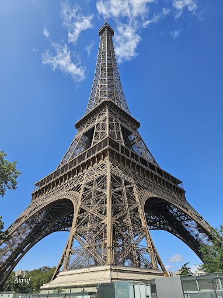
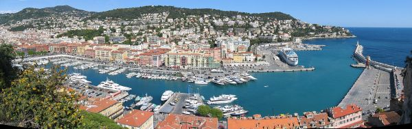
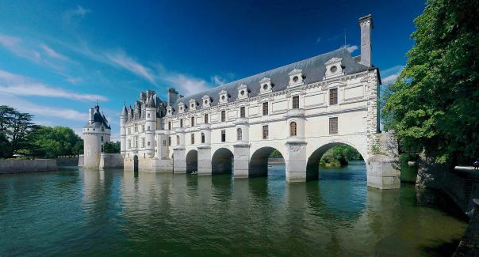
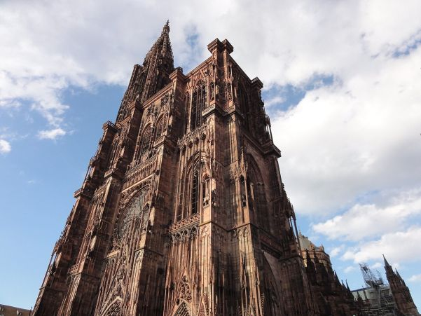

Paryż
Paryż to stolica Francji, znana z Wieży Eiffla, Luwru, Katedry Notre-Dame i urokliwych uliczek. Idealne miejsce dla miłośników sztuki, kultury i romantycznych spacerów.
Nicea
Położona nad Lazurowym Wybrzeżem, Nicea oferuje piękne plaże, stare miasto z wąskimi uliczkami i doskonałą kuchnię śródziemnomorską.
Mont Saint-Michel
Jedna z najbardziej malowniczych atrakcji Francji – opactwo na skalistej wyspie, otoczone przez przypływy i odpływy Atlantyku.

Dolina Loary
Znana z licznych zamków i winnic. To idealne miejsce na relaksujące wakacje wśród francuskich krajobrazów i historii.
Strasburg
Miasto z piękną architekturą, siedziba Parlamentu Europejskiego. Łączy francuską i niemiecką kulturę w wyjątkowy sposób.
